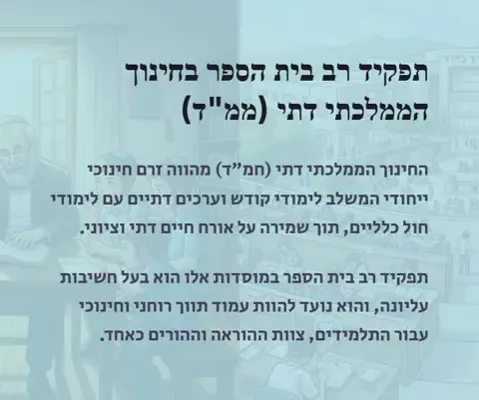
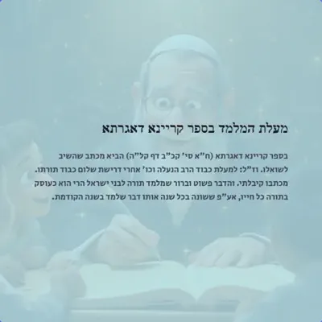
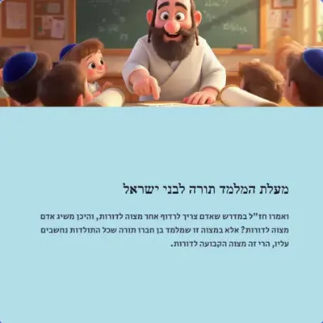
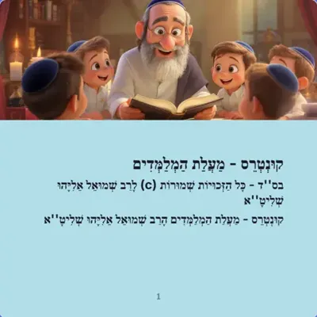
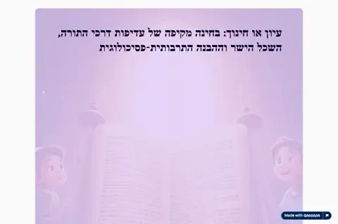
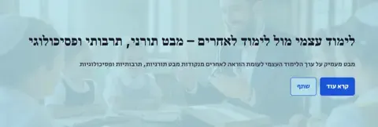
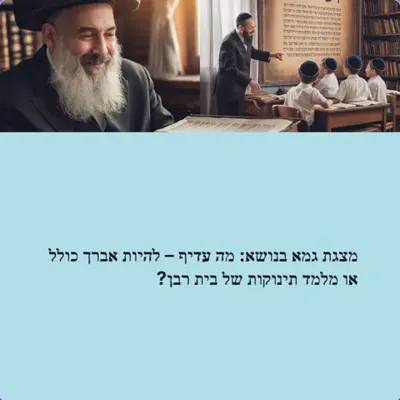

המורה – הוראה, הדרכה ודרשות
איך מלמדים משנה, גמרא, הלכה ותנ״ך, הגיל הרך, רב בית הספר, מעלת המלמד, ודרשות לסיומים ולאירועים
50 פריטים
הוראת תורה – משנה, גמרא, הלכה ותנ״ך (12)

הוראת הלכה בעומק
נקודת המוצא של המפגש היא פשוטה ועמוקה כאחת: דבר ה' — זו ההלכה . מרגע שהתלמיד קם בבוקר ועד שהוא הולך לישון, הוא…

מדריך למורה - הוראת משנה
מפגש זה הוא מפגש פתיחה שמטרתו לתת קריאת כיוון בהוראת משנה. לא רשימת תכנים, אלא המשקפיים הנכונות שדרכן מסתכלים …

מדריך למורה: כיתה שלומדת
תוכנית חיזוקים, גבולות ברורים וגיוס הורים. כלים מעשיים מתוך שיחת הדרכה בניהול כיתה

מפגש מקצועי: הוראת תורה שבעל פה ביסודי
המפגש נפתח בהזדמנות למשתתפים לשתף בהצלחות או התמודדויות מעולמם החינוכי. במסגרת המפגש הוצגו משתתפים שונים, ביני…

נספח ג': דוגמאות מוכנות למשחקים
מאגר המשחקים הכיתתיים - כל מה שצריך להתחיל מחר

עיקרון ע.מ.ר בהוראת התנ"ך
התנ"ך משעמם", "לא רלוונטי לחיי", "למה אני צריך ללמוד סיפורים עתיקים?

שיעור "כיצד מלמדים גמרא" - תמליל מלא
חלק א': פתיחה והצגת האתגר

הפשט והדרש מדריך יסודי להבנת שני רבדי המקרא
מאת: הרב יהודה טאוב 🎯 פרק 1: ההקדמה - למה זה חשוב? המטרה של הספר 🧭 להבין את ההבדל בין שני רבדים: 📖 הפשט - המשמ…

מידת משנה בדרך אחרת - מדריך מעשי ללימוד משנה שמתחבר לנשמה
למידת משנה בדרך אחרת מדריך מעשי ללימוד משנה שמתחבר לנשמה מאת: הרב יהודה טאוב 🎯 פרק 1: ההקדמה - מה דברים האלה ב…

למידה מבוססת פרויקטים
PBL 📚 מדריך לימוד למידה מבוססת פרויקטים חינוך בעידן השינויים – מהנחנו המסורתי לעשייה אמיתית 14 פרקים 4 עקרונות…

פרויקט יומי
חמד יומי – ספר השיעור 🦸 דף פתיחה לאפליקציה · חופש גדול · חמד יומי חמד יומי ספר השיעור המלא: איך הופכים את החופ…

שיטת החברותא
ספר השיעור — חכמה, חינוך ושינוי 📖 ספר השיעור — מהתמלול לידע חכמה, חינוך ושינוי אמיתי ספר מסודר לפי פרקים — מחי…
הגיל הרך והתפתחות הילד (10)

החינוך בגיל הרך במבט תורני-יהודי: מחקר הלכתי ומקצועי
היהדות זיהתה את חשיבות גיל הרך אלפי שנים לפני המדע המודרני. מקורות התורה, התלמוד וההלכה מדגישים כי גיל שלוש (ג…

החלון הזהב - גילאי 3-6
גילאי 3-6: כיצד נקבע מי נהיה לכל החיים ואיך זה משפיע על עבודת השם

המבטא הרגשי
כיצד נקבע גורלנו בשלוש השנים הראשונות לחיים

המבטא הרגשי
המדריך המקצועי לחינוך בגיל הרך - מהדורה מורחבת

השפעת החינוך בגיל 7: המעבר הגדול לחשיבה לוגית
גיל 7 הוא "נקודת המפנה הגדולה" בהתפתחות האנושית - המעבר הקריטי מחשיבה אינטואיטיבית לחשיבה לוגית. זהו הגיל שבו …

השפעת החינוך על הגיל הרך: מחקר מקיף על בניין רגשות חיוביים
מחקר עדכני בנוירו-מדע מדגים כי 90% מהמוח מתפתח בשלוש השנים הראשונות במהלך תקופת פלסטיות עצבית קריטית. חינוך אי…

התפתחות רגשית בשנה הראשונה לחיים - מתוקן
מדריך מקצועי מבוסס מחקר מתוקן - להורים וגננות

מבחן המרשמלו בחינוך למצוות
מתי להשתמש - ומתי לא!

מדריך מעשי להורים: השנה הראשונה שקובעת הכל
השנה הראשונה לחיי הילד שלכם היא כמו בניית בית. אם נבנים יסודות חזקים - הבית יעמוד לכל החיים. אם היסודות רופפים…

תורת הלב בחינוך הילדים - הרב קוק
רב בית הספר ורכזי הקודש (6)

המדריך המלא לרב בית הספר
מדריך מקיף לרבנים בחינוך הממלכתי-דתי

תפקיד רב בית הספר - מדריך לשנת הלימודים הקרובה
השנה מעמידה לפנינו הזדמנות מיוחדת - שנת המאה לקריית אתא. זהו רגע היסטורי שבו אנחנו נקראים לחבר בין הדורות, בין…

מפגש רכזי קודש - 1
סיכום מלא של המפגש — למי שלא היה 📋 סיכום מלא של המפגש — למי שלא היה 🎯 מפגש מקוון של מובילי ורכזי קודש במחוז, ל…

מפגש רכזי קודש
סיכום מלא של המפגש — Spring Torah 📋 סיכום מלא של המפגש — למי שלא היה 🌿 מפגש מקוון של מובילי ורכזי קודש במחוז, …

הרב אלקנה
Spring Torah spring-torah | דף שבועות/עצרת 🌸 דברי הרב אלקנה תורה שבעל פה פורחת: מבחן, מיפוי, סיומי מסכתות, שעו…

תפקיד רב בית הספר בחינוך הממלכתי דתי (ממ"ד) (מצגת)
מעלת המלמד (7)

למה אנשים לא רוצים להיות מלמדים? הפער בין רבני מתיבתא למלמדי חיידר
סיכום מהיר קיים מחסור חריף במלמדים בחברה החרדית, למרות שרמי"ם (רבני מתיבתא) בישיבות קטנות זוכים לביקוש רב על א…

מעלת המלמד בספר קריינא דאגרתא (מצגת)

מעלת המלמד תורה לבני ישראל - ב (מצגת)

קונטרס - מעלת המלמדים (מצגת)

עיון או חינוך: בחינה מקיפה של עדיפות דרכי התורה, השכל הישר וההבנה התרבותית-פסיכולוגית (מצגת)

לימוד עצמי מול לימוד לאחרים (מצגת)

גמא בנושא: מה עדיף – להיות אברך כולל או מלמד תינוקות של בית רבן? (מצגת)
דרשות, תפילות וסיומים (7)

תפילת המלמד הצדיק - מעמקי הנשמה
אנכי עבדך הנכנע, באתי לפני כסא רחמיך כחרס נשבר המבקש תקון. הנני יודע כי אין בי כלום, וכל מה שאני חושב שיש בי -…

סיום כיתה ו
׳ – סעודת הודיה סעודת הודיה // סיום כיתה ו׳ וַיַּעַשׂ אַבְרָהָם מִשְׁתֶּה גָדוֹל דרשה לסיום שנת הלימודים SCHOO…

סיום כיתה ו - 2
דרשת סיום כיתה ו׳ | סייברפאנק ⚡ רבני בתי הספר · מסיבת סיום כיתה ו׳ ⚡ סיום & שמחה דרשה לרב בית הספר 🎮 ⚡ ילדים י…

דרשה לבנות סיום כיתה ו
דרשה לסיום כיתה ו׳ – בנות | סעודת הודיה סעודת הודיה // סיום כיתה ו׳ – בנות מִי יִמָּלֵל גְּבוּרוֹת ה׳ יַשְׁמִי…

מסיבת סיום - מאיפה זה בא?
מסיבת סיום – מאיפה זה בא? ✦ שיעור מיוחד ✦ 🎉 מסיבת סיום מאיפה זה בא? האם יש מקור בתורה לחגוג כשגומרים משהו גדול…

יהלומים, כוכבים וגלים פנינים וכוחות למלאכת ההוראה — מתוך ערב ההוקרה לרב משה
טאוב חוברת למורה המתחיל · מאת: הרב יהודה טאוב חוברת זו אינה אוסף זיכרונות. היא כלי עבודה. שמונה רעיונות שנאמרו…

תפילת המורה
ריבונו של עולם - תפילת המורה 🙏 ✨ ריבונו של עולם ✨ תפילת המורה לפני הכניסה לכיתה תפילה + כלים מעשיים = הצלחה אמ…
עוד הדרכה וכלים למורה (5)

האריה בשביל
מתוך ההרצאה "מבוא לטראומה ולחוסן: השפעות חשיפה ללחץ" של פרופ' אלון חן

הזמזום בשמיים
מתוך ההרצאה "טראומה והשפעותיה על ילדים ובני נוער" של פרופ' אורית נוטמן-שורץ

המבט התורני מול הפסיכולוגיה המודרנית בחינוך

שיטת ניהול הזמן של ד-ר שירלי הרשקו
⚓ עוגנים לחוסן – סיכומי הרצאות (בקוד גישה)
סיכומי ההרצאות מהכשרת 'עוגן': טראומה וחוסן, עזרה ראשונה לנפש, סימני מצוקה, מצבי לחץ, קבוצה מרפאת ועבודה עם ילד…
סיכומי מחקר על המאמרים שלי (3)

סיכום מחקר: בזיעת אפך – קללה, תרופה או הדרך לחיות משמעות
ה_לחיות_משמעות__המהפך_המפת מצאתי כתוב בזה"ל "סיכום הקללות שבתורה". א) בזעת אפך תאכל לחם, ארורה האדמה בעבורך, ב…

סיכום מחקר: כשאור צומח מחושך
ים_והיישום_המעשי_להתמודדות_עם

סיכום מחקר: בזיעת אפיך – האם הקדמה הטכנולוגית ברכה או קללה
סיכום נוטבוק - - בזיעת_אפיך__האם_הקדמה_הטכנולוגית_היא_ברכה_או_קללה_קיומית_בעידן_